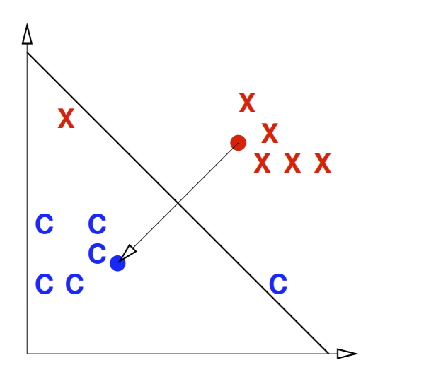

The Centroid Method
The Centroid Method¶
Let’s introduce our first explicit classification algorithm- a very simple linear classifier.
So remember what we start with: our training dataset has points with class \(C\) and points in class \(D\) (points not in \(C\)). The goal is to create a separating hyperplane.
First, we compute the means of both classes as \(\mu_C\) and \(\mu_D\)- we call these means centroids of class C and D, respectively. Since our data points are feature vectors in \(\mathbb{R}^d\), it makes sense that our centroids are also vectors in \(\mathbb{R}^d\).
From this, we want our decision boundary to be the line that perpendicularly bisects the line connecting \(\mu_C\) and \(\mu_D\). It’s much easier to visualize this with an example:
{kind=link}
Notice the centroid for the blue class is denoted by the blue circle, and the same for red. The decision boundary is the thicker line that bisects the line connecting the blue and red points at a right angle.
From this, we can construct our decision function \(f(x) = w \cdot x + \alpha\). We set our normal vector \(w = \mu_C - \mu_D\). For \(\alpha\), note we want our hyperplane to pass through the midpoint between \(\mu_C\) and \(\mu_D\): this midpoint is \(\frac{\mu_C+\mu_D}{2}\). That means if \(x\) is this midpoint, we want \(f(x) = 0\). Therefore we set \(\alpha = (\mu_C - \mu_D) \cdot \frac{\mu_C+\mu_D}{2}\) to get the overall centroid decision function
We can sometimes improve this classifier by adjusting \(\alpha\) (scalar term) to minimize the number of misclassified points. The hyperplane will have the same normal vector \(w\), but just shifted up or down. For example, we can shift our hyperplane above such that the misclassified blue “C” is on the right side of the plane.
That’s it! In summary, the centroid algorithm creates a very simple classifier that will work very well for a dataset where the classes are clustered tightly together and far apart from each other. All we have to do is compute the centroid vectors for both classes, then create our decision function.